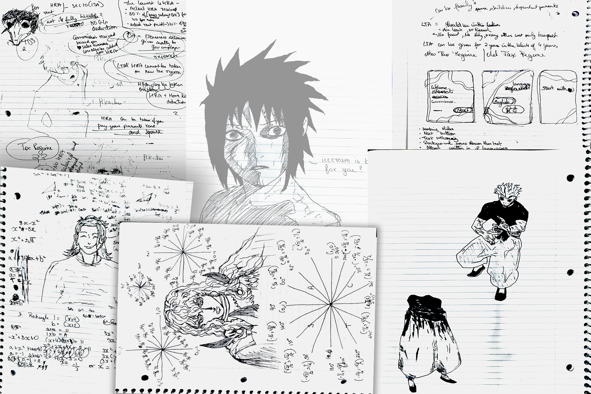
disciplinary
Student
Awwwards
I spend a lot of time looking at Awwwards recognized sites. I've always admired those incredibly complex, award-winning developer portfolios, and I wanted to know if I could actually build one myself. This project was a personal test: how much could I make? What are my limits compared to the people winning these big awards?
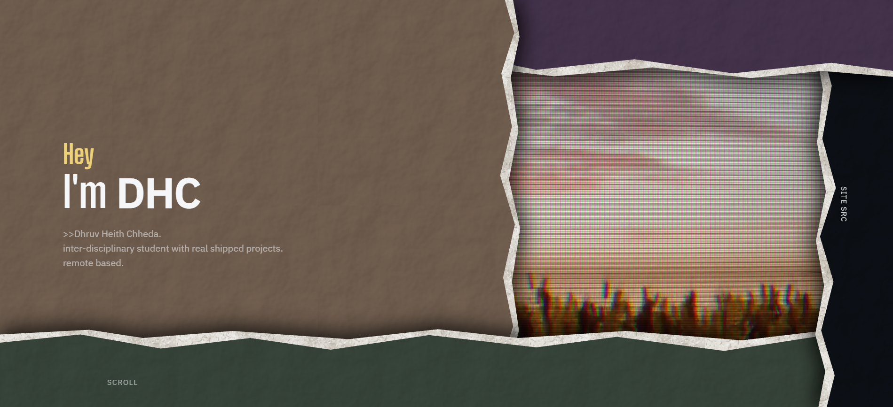
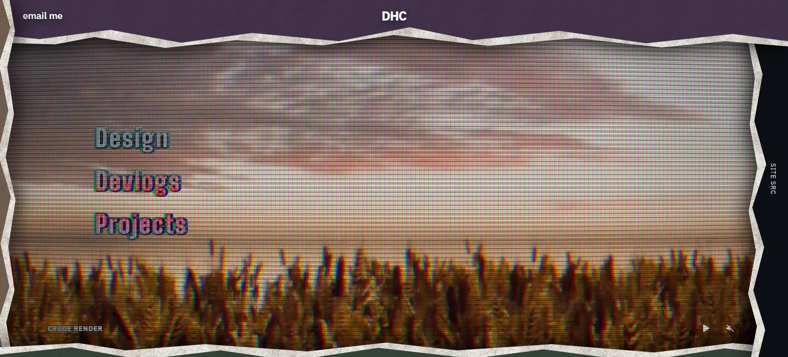
Designing the landing page took a lot more time than I thought it would. I tried entirely different layouts, aesthetics, and color palettes. It felt like the average modern website design. Going too abstract or raw made it look janky, and making it modern made it look bleak. Compared to this, the other pages were easier since by the time the landing page was done, I had the exact idea of what I wanted to do.
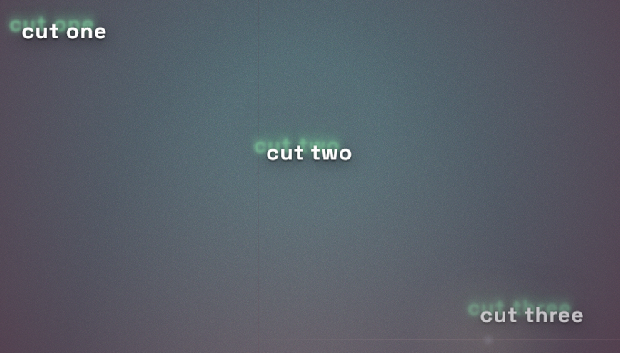
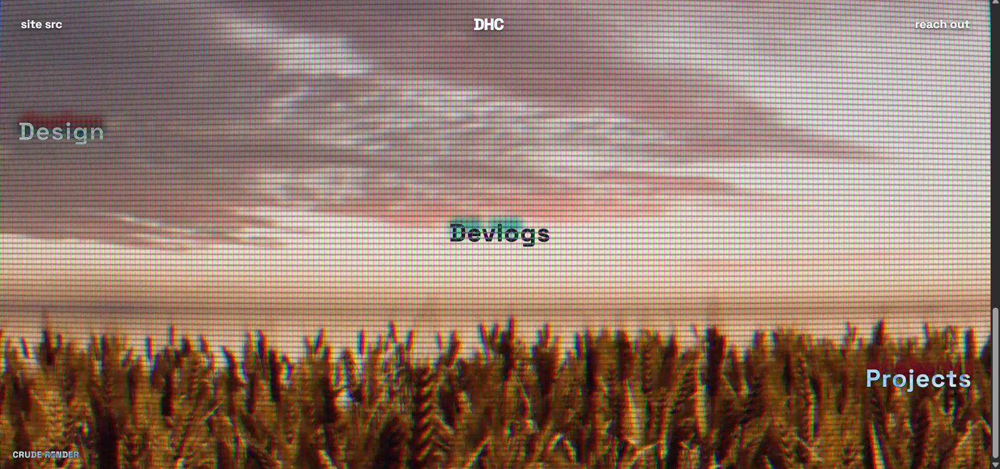
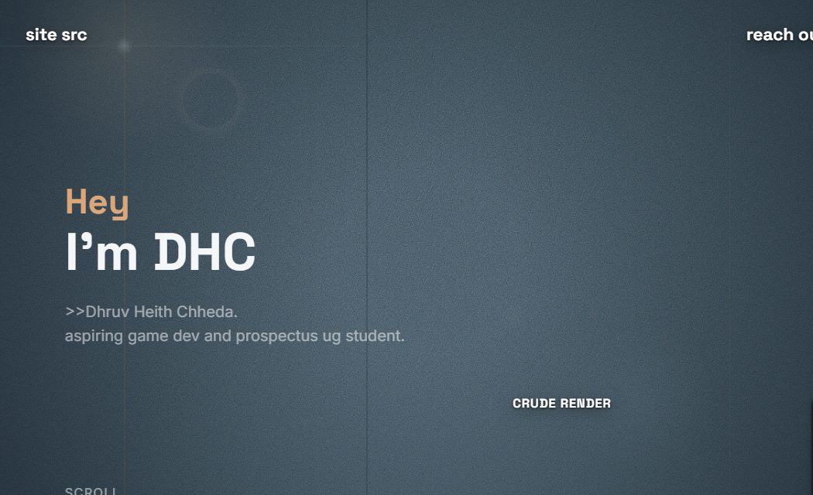
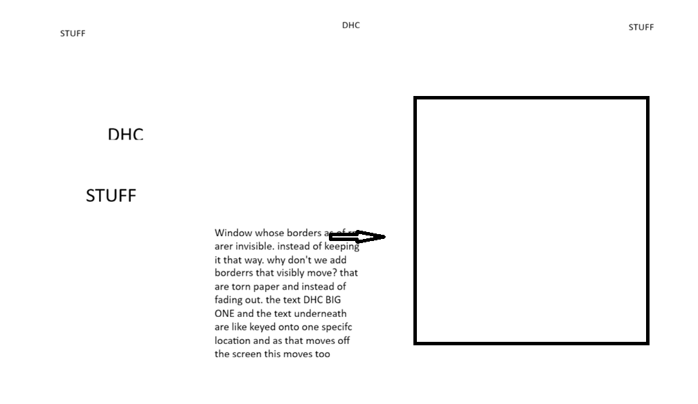
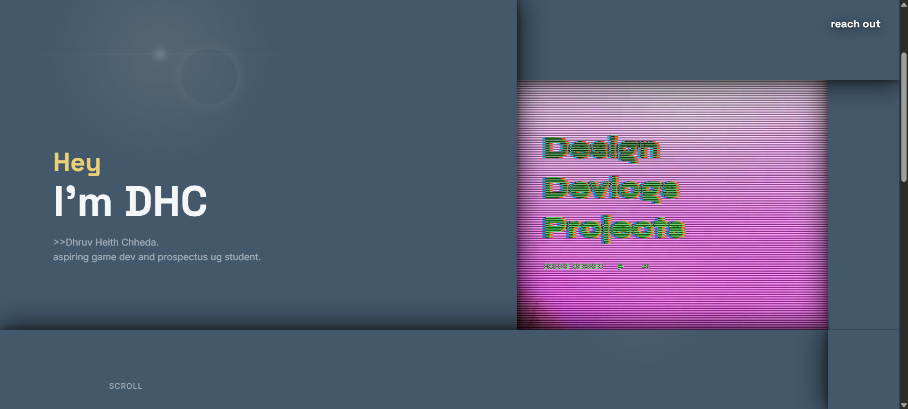
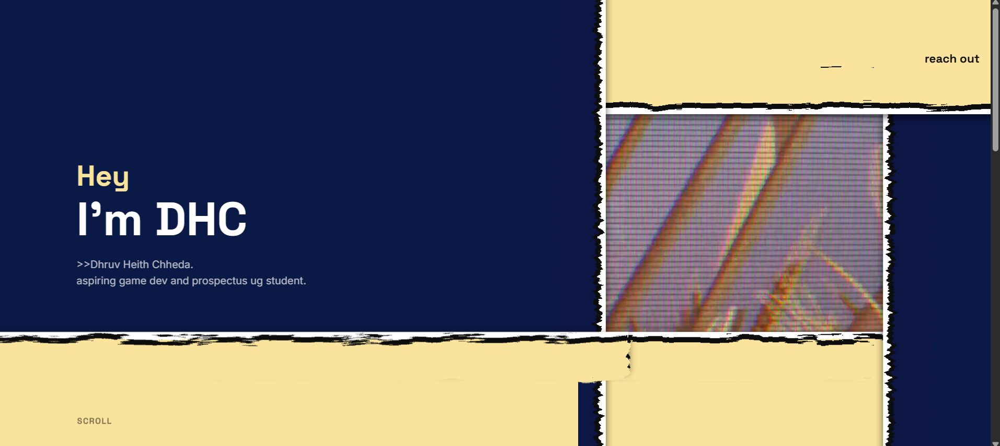
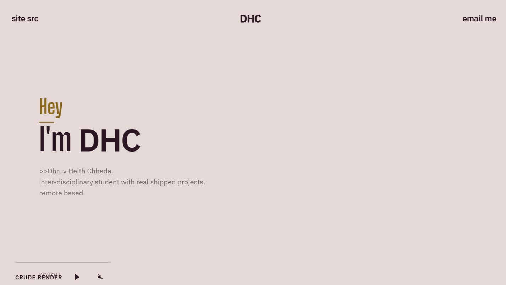
I knew I wanted the landing page to have two very different sides to it. The video reveal was part of the idea from the start. Instead of having a normal expanding window, I tried making the paper itself tear open and reveal the video underneath.
The final version ended up being paper on top and CRT underneath,with an Escher-like loop for the paper panels. The texts on the panels are like ink on paper and move along with it.
The opening animation is meant to mess with the browser a little. At first the tab has no favicon because I put a transparent pixel in its place. The glass favicon appears inside the loading screen, moves upward, and ends up sitting in the browser tab where the empty space was.
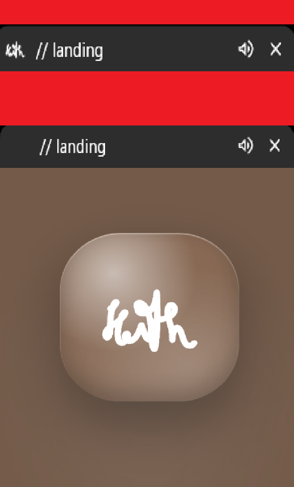
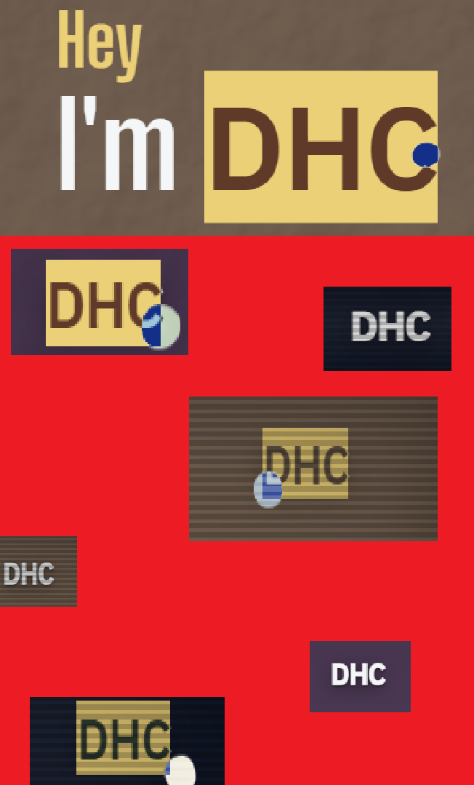
The DHC brand is the one piece of text I left selectable. Everything else on the site has selection disabled.
I also wanted the brand to feel like one object instead of two copies. It starts underneath the left paper panel. As the page moves, that version slides away at the same time the one in the navigation comes into view.
The central navigation isn't static. The "S-Text" elements (Design, Devlogs, Projects) are suspended over the video layer, utilizing mix-blend-mode: difference.
Difference blending subtracts the text color from the background. If the video frame changes, the text color changes wildly. This made the text look funky but also caused issues: let's say on inverting 10 it becomes 1, inverting 2 becomes 9, 3 would then become 8, and 7 would become 4. But colors close to each other, like gray and other muddy colors, would produce colors similar to each other.
So I stopped trying to pick one text colour that worked everywhere. I read the video colours and worked backwards from it to find the CSS colour the text needs at specific seconds.
The same thing is done for the little colour ghosts around the text. Their colours are updated with the video too.
The paper panels aren't just sitting there as decoration. They move backward as you scroll and uncover the CRT footage underneath them.
The cursor follows the mouse with lerped movement, stretches as it moves, and changes when it hits something interactive. Clicking the window can also push the scroll transition all the way through.
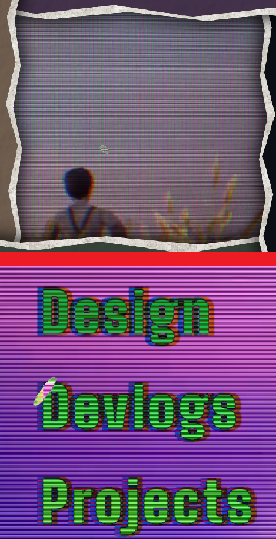
I pulled a lot of the colour direction from Wes Anderson. One thing I liked in one of his work was keeping most of a scene close together and then letting one colour be noticeably louder.
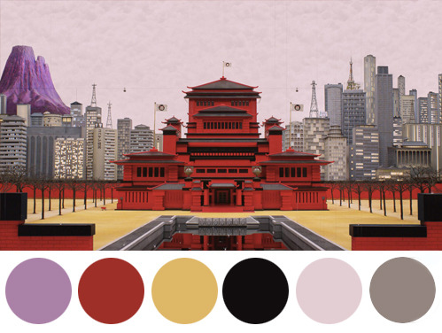
The reference here is one I found on Tumblr. The yellows, greys, and muddy colours sit together, while the red is allowed to stick out and the purple feeling outwardly alien. I used the same idea on the site while the panel colors vary they also have an earthly side, then the video brings in neon colours without changing the rest of the page.
The colours also have jobs outside of looking nice. The right panel on the root site uses #0D1117, which is GitHub's dark background. When that panel opens, the real GitHub interface slides into it, so the two already match. The other panel colours are used in the same way on the other sites.
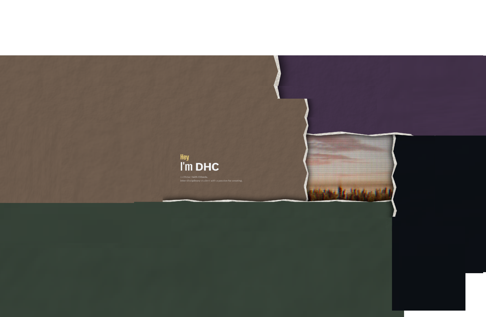
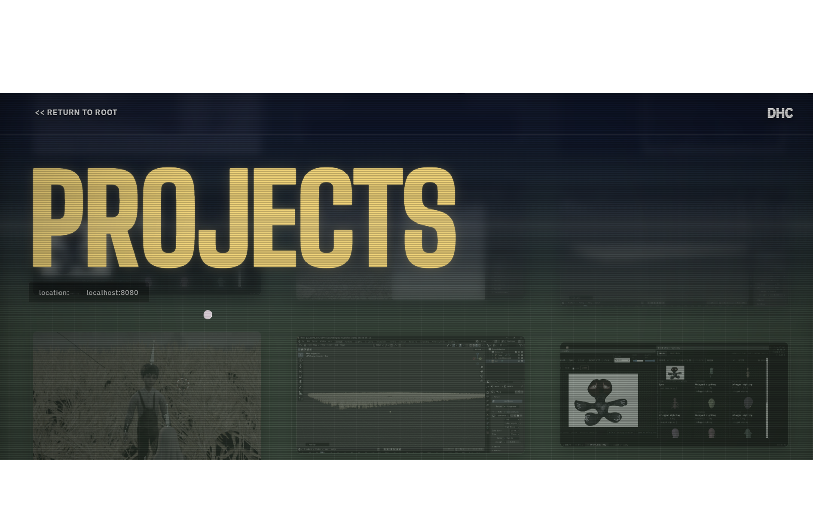
This document follows the same colour idea. Odd pages start white. Even pages start black. As the document goes on, those two tracks get closer together through perceptual OKLCH colour space until they meet at the same vermilion red on the last page.
That is why the pages look so different at the start and much closer together at the end. The project and the site are full of things that don't normally belong together: paper UI, CRT footage, GitHub, a fake OS, alien generators, a game. Still, a site can really just be there to do one thing: disseminate information. The implementation can change completely and the purpose stays the same. They are all parts of the same portfolio — the same vermilion red.
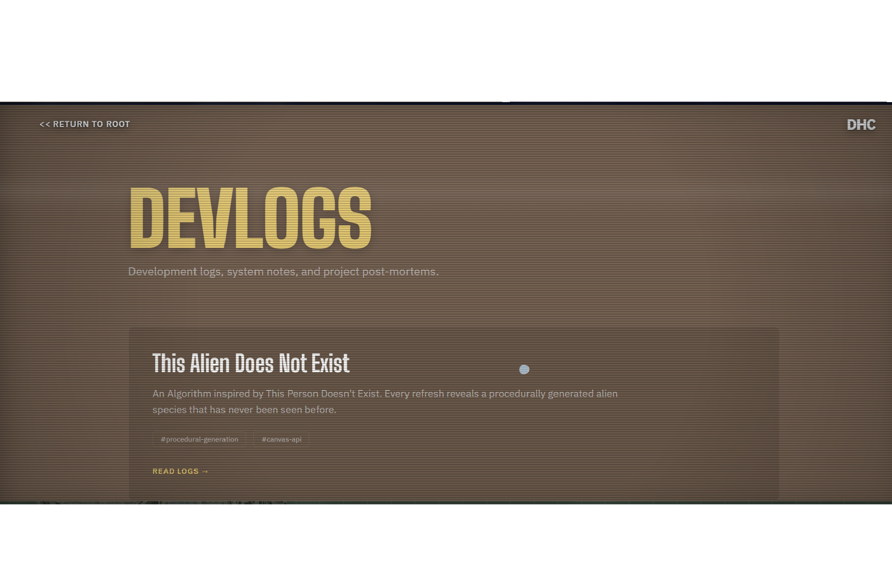
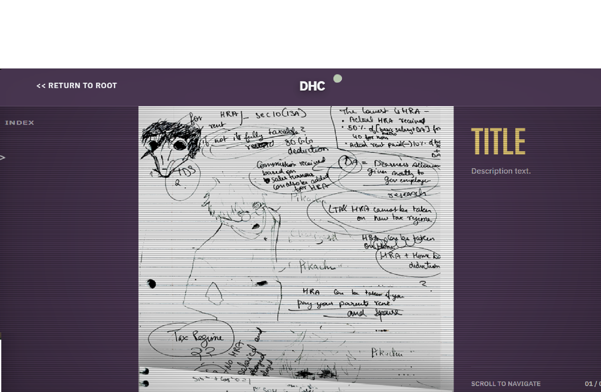
The full version is heavy on hardware. There are CRT scanlines, the four-layer paper transition, WebGL blending and a lot of things moving at once.
I didn't want the site to just assume every device could handle that. So there is a check in the <head> that runs before the first paint. It checks the WebGL renderer, deviceMemory, hardwareConcurrency and the browser's saveData setting.
When the check says the machine probably shouldn't be running the full version, the site switches to Lite mode instead. The scanlines disappear. The paper layout is removed. The S-text ghosts are removed. The page becomes a much simpler static version instead of trying to keep all the effects running and turning the experience into a slideshow while still presenting the same information.
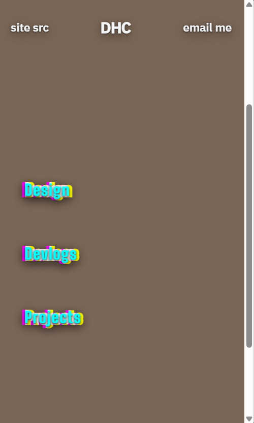
The main site uses Big Shoulders Display for the huge headings and gateway links. I liked how narrow and tall it was, especially when the text gets really big. It makes the links feel more like parts of the layout than normal website headings.
IBM Plex Sans handles the smaller text and UI because it is easier to read at normal sizes.
This case study requires a different voice. It mimics a physical printed document. Manrope serves as the geometric, cleanly readable body typeface. JetBrains Mono is used for meta-labels, dimensions, and structural annotations, treating the page like a blueprint.
This is a creature generator where the input is a PRNG number. You type something in and that number becomes the seed. Mulberry32 uses that seed to decide what the creature looks like. The same seed creates the same alien. with over 4 billion unique ones.
The number becomes the creature's seed. Mulberry32 turns it into a repeatable sequence of numbers, which I use to choose the anatomy, colours, textures and other traits. I put rules around those choices so the result doesn't just become a pile of unrelated random parts, all of the categorization and taxonomy are related to each other and the numbers and can be reproduced with the same seed.
The creature is drawn directly onto an HTML5 canvas. The textures, gradients and appendages are generated from the same seed.
Determinism: Pure randomness does not exist natively in CS, and that is used to our advantage with a fairly easy to predict number generator. With the seeded generator, the same seed will always give you the same result every time you run it. Change the seed and you get a different creature.
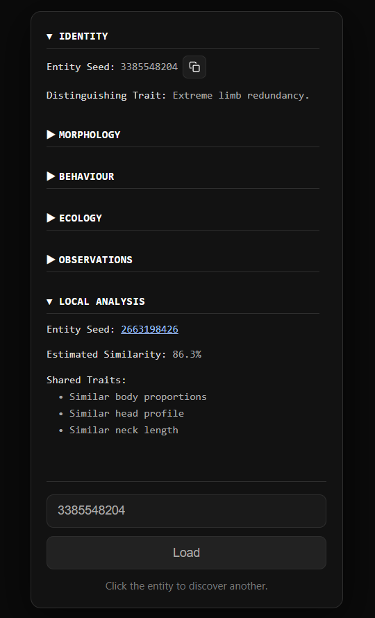
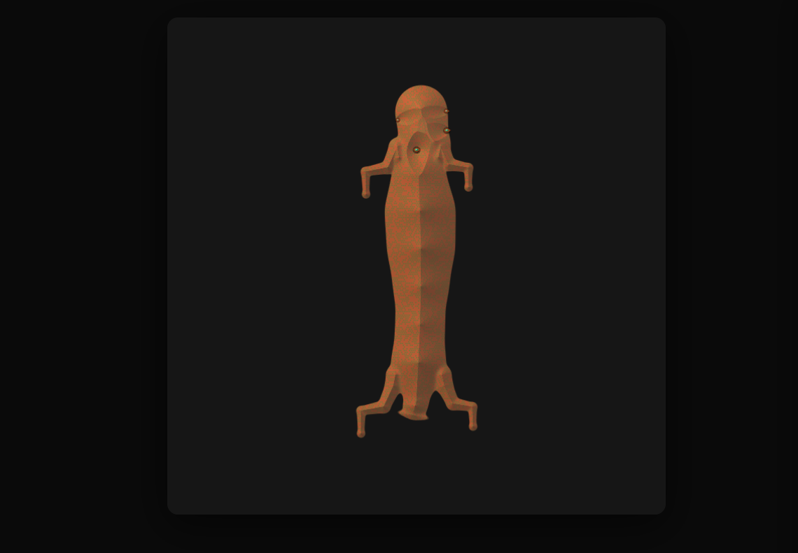
VoyagerOS started as a silly idea: what if the website was not a website at all? What if it was the computer running on a ship that has been travelling for far too long?
So instead of building a fake desktop and stopping there, I built the boring stuff too: boot screens, windows, files, a terminal, processes, an archive and a whole fake filesystem. It is basically a tiny computer for a spacecraft that does not exist.
The important part is what the OS hides.
Mission files, logs and strange little bits of data turn the interface into a place to discover the Voyager-9 story. The Alien Registry connects it to the creatures being found outside the ship, with .alr packages making those discoveries feel like actual files from the mission.
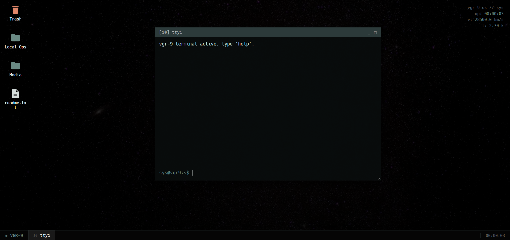
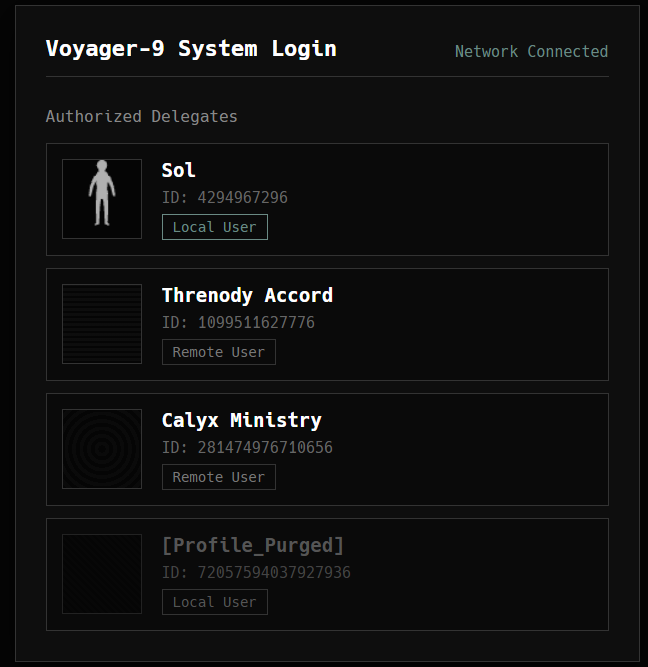
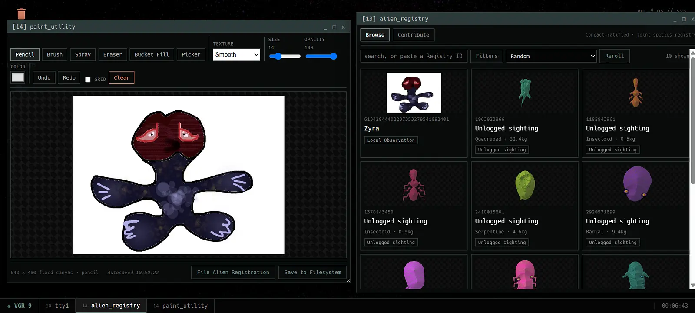
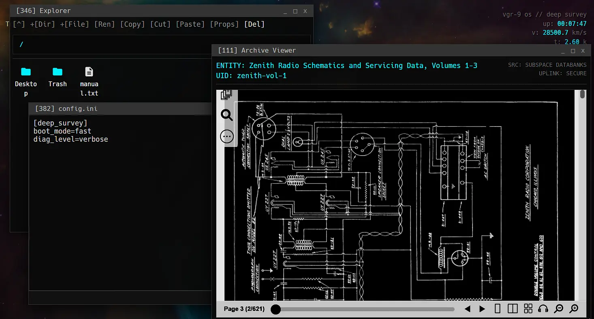
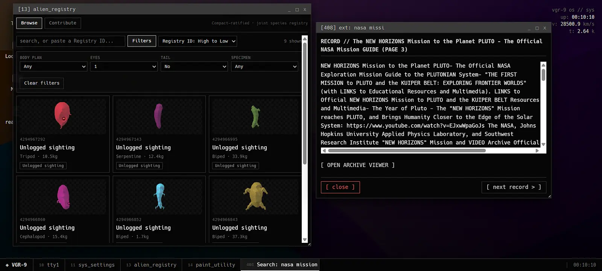
Seven Minute Shadow is a tiny collection of fast, weird little games. Every few seconds the rules change, so the real challenge is figuring out what you are supposed to do before the game decides you have had enough.
I wanted it to feel deliberately scrappy and playful rather than like a huge polished game. Short rounds, quick reactions, pixel art, chunky 3D bits and increasingly questionable ideas.
The whole thing lives in Godot, with GDScript handling the game logic. Aseprite handles the 2D art and animation, while Blender covers the little 3D pieces. The result is a pile of small experiments that somehow became a game — still a demo.
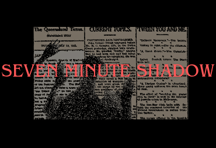
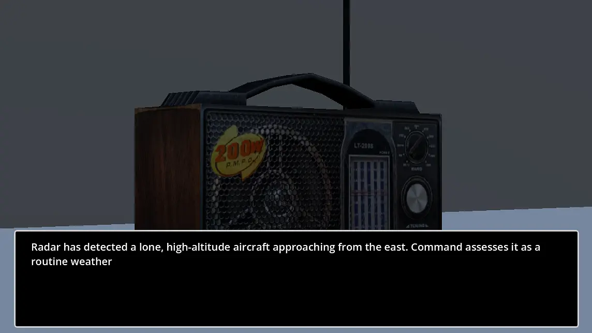
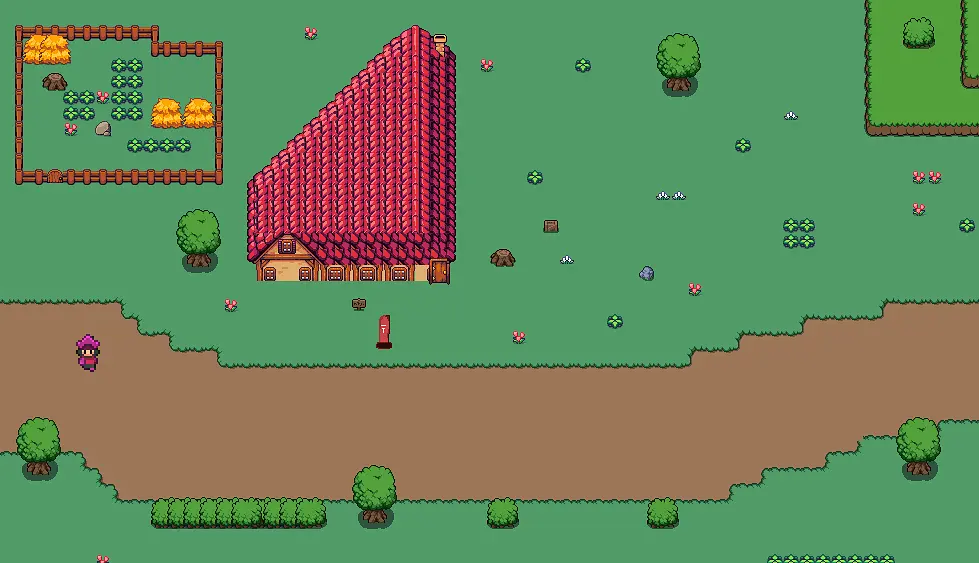